This function generates a volcano plot based on the results of a MaAsLin2 analysis in order to visualize the differential abundance of microbial gene families or pathways (features) associated with specific fixed effects.
plt_volcano(da_result)A volcano plot visualizing differential abundance of microbial features.
The x-axis represents the coefficient or effect size of each feature, indicating the magnitude and direction of change associated with the chosen fixed effect. The y-axis represents the statistical significance of the differences (negative logarithm of the p-values).
Each point on the plot corresponds to a gene family or pathway, with its position determined by both its effect size and statistical significance. Only features with a q-value < 0.05 are deemed significant and therefore colored, in red if its abundance increases or blue if its abundance decreases.
# Def data paths
metadata <- system.file("extdata", "ex_meta.csv", package = "microfunk")
file_path <- system.file("extdata", "All_genefam_cpm_kegg.tsv", package = "microfunk")
# Read HUMAnN3 & MaAsLin2 Analysis
da_result <-
read_humann(file_path, metadata) %>%
run_maaslin2(fixed_effects = "ARM")
# Volcano Plot
plt_volcano(da_result)
#> Warning: Removed 44 rows containing missing values or values outside the scale range
#> (`geom_point()`).
#> Warning: Removed 2 rows containing missing values or values outside the scale range
#> (`geom_text_repel()`).
